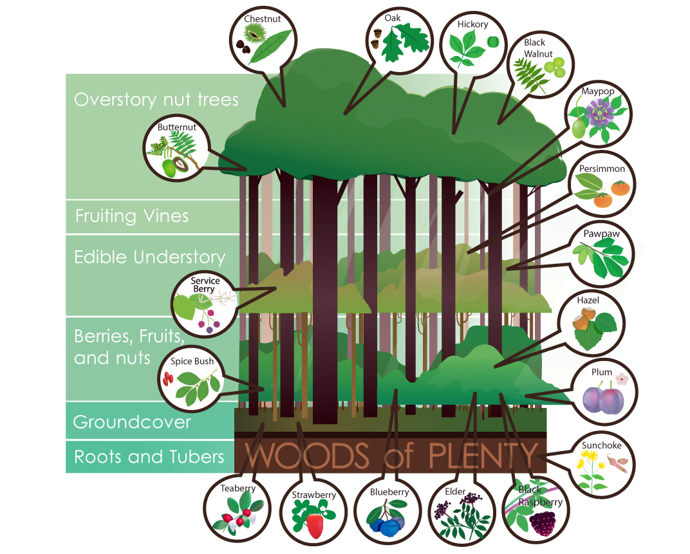

In today’s world we must take it upon ourselves to grow food that has not been treated by chemicals. Forests that have yet to be managed are a perfect place to grow safe, non-toxic food.
Planting a diverse array of native fruiting and flowering plants will deliver consistent food sources for many creatures beyond humans. Insects will enjoy a lasting supply of pollen and nectar throughout the seasons and birds will enjoy a large supply of insects and fruits. As these communities thrive, so will the overall health of the forest. All residents of Woods of Plenty are our allies in success.
Identifying and filling ecological niches is our specialty. Furthermore, our native plantings are tailored to suit the desires of the humans using the forest.

White Oak
Quercus alba L.
White Oak is a truly impressive tree in the forest. Its acorns are by far the sweetest out there and we await the next mast year to make a hearty bread flour. Achieving a good old age, it will sit comfortably on the hilltops with its broadly rounded crown.
Elderberry
Sambucus canadensis (L.)
We love this plant because it will grow anywhere. Anywhere. Packed with nutrition, harvesting elderberries each year assures us incredible juice to drink and the opportunity for delicious wine.
Black raspberry
Rubus occidentalis L.
We eagerly await mid-July when these berries become ripe. There is no more simple pleasure than tasting a sun sweetened black raspberry straight from the cane. Easy to propagate for your Woods of Plenty, they are a yearly staple for pies and jam.
Sweetgum
Liquidambar styraciflua L.
This pleasant smelling tree has beautiful star shaped leaves and a clean, vertical structure in the forest. Tolerant of a variety of soils and flooding. It is fast growing and the sap has been enjoyed as gum by children for decades.
American Plum
Prunus americana
Spreading wide in open fields, it is great for windbreaks and highway or riverside plantings. Produces a delicious fruit that is enjoyed by all creatures. Its growth can form a thicket perfect for a variety of uses by birds and animals, including nesting and loafing.
Blueberry
Vaccinium L. spp.
This perennial favorite of ours is high in antioxidants, tolerates shade and grows in acidic soils. We can always find another spot for this bush in your Woods of Plenty. Both highbush and lowbush blueberry deliver an incredible flavor when picked and enjoyed fresh.
American Persimmon
Diospyros virginiana L.
Grows in open sun or under the canopy on a wide variety of soil. Fruit hangs on the tree and ripens in late fall, providing a nutritious winter harvest to boost your preserved fruit supply.
American Hazelnut
Corylus americana
This well shaped suckering shrub supports wildlife and produces prolifically. The nuts are sweet and fatty and the male catkins are winter food for turkey and ruffed grouse.
Pawpaw
Asimina triloba L.
North America's largest native fruit. High in amino acids, it has a tropical flavor similar to banana and mango custard. Young trees will sucker to establish a pawpaw patch.